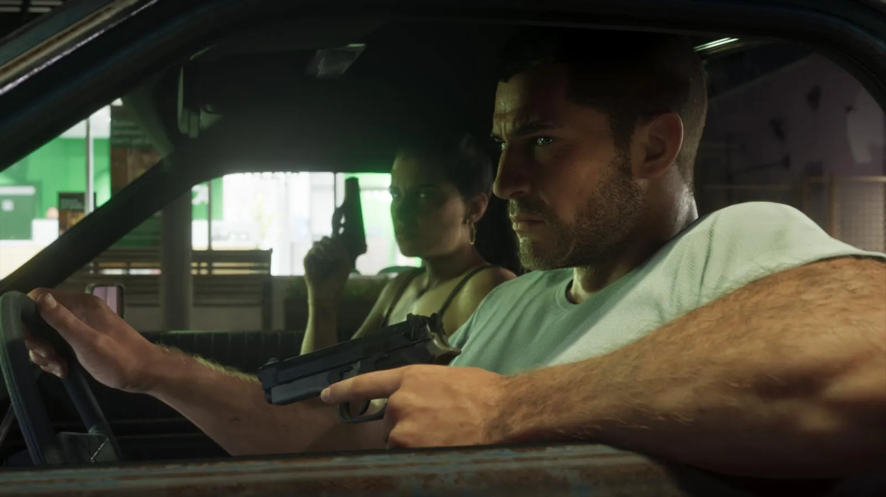

Радиостанции GTA 6: все 22 станции, жанры и ведущие
Опубликовано: · Обновлено:

- В игре 22 радиостанции — больше, чем в любой GTA на старте.
- Из GTA Vice City вернулись Flash FM, V-Rock и Emotion 98.3.
- Разговорные станции — The Wipe и WKTT; есть подкасты по запросу.
- Радио можно слушать пешком, в наушниках.
- Альбом Grand Theft Auto VI: The Album — 34 трека, вышел 19 ноября.
Все 22 радиостанции в игре
До релиза Rockstar показала только шесть станций — с ведущими и превью песен. В вышедшей игре их 22: столько насчитали в колесе радио авторы гайдов сразу после запуска. Это больше, чем в GTA 5 на старте. Жанр в таблице — тот, что звучит на станции чаще всего; почти на всех между песнями идут шутки ведущих и пародийная реклама.
| Станция | Что играет | Ведущие | Откуда известно |
|---|---|---|---|
| Afrobank FM | африканская музыка: от классики XX века до амапиано | Burna и Palmsy | официально (08.10) |
| Back Country Radio | «бунтарское» кантри, прогноз «болотного метеоролога» | MW и Delta Dawne | официально (08.10) |
| The Chamber 106.6 | метал | DJ Kerry и DJ Tom | официально (08.10) |
| CircoLoco Records Radio | электроника лейбла CircoLoco | — | в игре |
| Cocoteo FM | современная латиноамериканская: бачата, меренге, дембоу, реггетон | El Martillo и La Gata | официально (08.10) |
| Dirty South Classics | классика южного рэпа | Trick и Trina | официально (08.10) |
| Emotion 98.3 | пауэр-баллады | — | в игре; станция вернулась из GTA Vice City |
| Flash FM | поп | Robyn и Alex | официально (08.10); станция вернулась из GTA Vice City |
| Gloriana Blues Radio | блюз | — | в игре |
| Honey FM | R&B | — | в игре |
| Kaleidoscope FM | синти-поп | — | в игре |
| Leonida Jazz Radio | джаз | — | в игре |
| Radio La Ola | сальса | — | в игре |
| Radio On-U | регги | — | в игре |
| Stockyard FM | вечеринки, электроника | — | в игре |
| Symphony FM | классическая музыка | — | в игре |
| The Wipe | разговорное радио | — | в игре |
| VCRR | трэп | — | в игре |
| Vice City FM | музыка 80-х | — | в игре |
| V-Rock | рок | — | в игре; станция вернулась из GTA Vice City |
| WKTT | комментарии, ток-шоу | — | в игре; станция знакома по GTA 4 и GTA 5 |
| Worldwide FM | хаус | — | в игре |
Три станции вернулись из GTA Vice City 2002 года: Flash FM (тогда — поп 80-х), V-Rock (тогда — хэви-метал с ведущим Лазлоу) и Emotion 98.3 (баллады). Ещё до релиза V-Rock «засветилась» на футболке Джейсона в ролике с официального сайта, а список из 14 станций утёк вместе со слитым геймплеем — в вышедшей игре он подтвердился.
Разговорных станций две — The Wipe и WKTT. Подкасты — отдельная новинка серии: их слушают по запросу, в любом месте, а не по эфирной сетке.
- Самая большая сетка радио в истории серии: Rockstar так и говорила ещё 8 октября — «от классического рока до разговорного радио».
- Ведущие Cocoteo FM, Afrobank FM, The Chamber, Flash FM и Dirty South Classics — реальные музыканты под псевдонимами; Rockstar их настоящие имена официально не раскрывала.
- Радио слушают и пешком — через наушники героя, это новая функция GTA 6.
- Альбом Grand Theft Auto VI: The Album (34 трека) и радио — разные вещи: песни альбома звучат в игре, но радио гораздо больше.
Шесть станций
Ещё 8 октября 2026 года, до релиза, Rockstar Games рассказала о шести радиостанциях GTA 6 и выложила превью каждой на официальном сайте игры. Ведущие выступают под псевдонимами, но это реальные музыканты.
| Станция | Музыка | Ведущие | Песни из превью |
|---|---|---|---|
| Cocoteo FM | Современная латинская музыка: бачата, меренге, дембоу, реггетон | El Martillo и La Gata — Bad Bunny и RaiNao | Bad Bunny — «EoO»; Romeo Santos и El Chaval de la Bachata — «Canalla» |
| Back Country Radio | «Бунтарское» кантри | MW и Delta Dawne — Морган Уоллен и Лана Дель Рей; в эфире также Джереми Дюфрен | Loretta Lynn — «Don’t Come Home A-Drinkin’»; David Allan Coe — «Need a Little Time Off for Bad Behavior» |
| AfroBank FM | Африканская классика, амапиано, 3-step | Burna и Palmsy — Burna Boy и Palms Trax | Asake — «Joha»; Pat Thomas и Ebo Taylor — «Gye Wani» |
| The Chamber 106.6 | Метал с 80-х и до наших дней | DJ Kerry и DJ Tom — Керри Кинг и Том Арайя (Slayer) | Black Sabbath — «I»; Pantera — «I’m Broken»; Slayer — «Raining Blood» |
| Flash FM | Поп и танцевальная музыка | Robyn и Alex — Робин и Алекс Консани | Charli xcx — «Good Ones»; MGMT — «Electric Feel» |
| Dirty South Classics | Классика южного рэпа | Trick и Trina — Trick Daddy и Трина | David Banner — «Like A Pimp»; DJ Khaled — «Born N Raised» |
Flash FM — старое имя: поп-станция с таким названием была ещё в GTA: Vice City 2002 года. Trick Daddy и Трина — рэперы из Майами, так что «Грязный Юг» в Вайс-Сити ведут местные.
Радио пешком и подкасты
Впервые радио в GTA работает не только в машине. Джейсон и Лусия могут слушать станции и подкасты пешком — через наушники, подключённые к игровому смартфону. Ещё одна новинка серии — подкасты по запросу, записанные специально для игры: их можно включить в любой момент, а не ждать в эфире.

Альбом и музыка к игре
- 17 сентября 2026 Rockstar анонсировала «Grand Theft Auto VI: The Album» — 34 оригинальных трека, созданных для игры, совместно с Atlantic Records. Альбом вышел 19 ноября вместе с игрой.
- Музыку к миссиям (саундтрек) пишет электронный дуэт Justice — это Rockstar сообщила вместе с выходом трейлера 3 (15 октября 2026).
- Радио и саундтрек — разные вещи: саундтрек звучит в миссиях, радио вы включаете сами.
Что ещё будет
Шесть станций — только первая часть. В анонсе Rockstar перечислила и другие жанры, которые будут в игре: классический рок, современный хип-хоп, дэнс, музыка 80-х, электроника, блюз, баллады и разговорное радио. Полный список станций виден в самой игре, в колесе радио.
Отдельные артисты сами заявляли, что их песни будут в игре (например, рэпер Skrilla), но Rockstar такие заявления не подтверждала — мы их в список не включаем.
Радио — визитная карточка GTA
Радио было в GTA с самой первой части 1997 года. Но культовым оно стало в Vice City (2002): Flash FM с поп-хитами 80-х, V-Rock с металлом, Wave 103 с нью-вейвом, Emotion 98.3 с балладами, плюс ток-шоу и реклама-пародии. Саундтрек вышел отдельным бокс-сетом из семи дисков. В GTA 4 рок-станцию вёл Игги Поп, а в GTA 5 на старте было больше пятнадцати станций. Голосом многих радиоэфиров серии годами был Лазлоу Джонс.
В GTA 6, по данным Rockstar Newswire, — станции с ведущими, лицензионные хиты, подкасты, а радио можно слушать и пешком, в наушниках. Отдельно выходит альбом The Album и музыка Justice (Grand Theft Auto VI: The Album — 34 трека и уже вышедшие синглы).
- Реклама на радио GTA — отдельный жанр сатиры: её пишут как настоящие рекламные ролики.
- Песня Тома Петти из трейлера 1 и «Hot Together» из трейлера 2 — тоже хиты 80-х, как радио Vice City.
Частые вопросы
Сколько радиостанций в GTA 6?
22 — по колесу радио в вышедшей игре.
Есть ли Flash FM и V-Rock в GTA 6?
Да, обе вернулись из GTA Vice City, как и Emotion 98.3.
Есть ли разговорное радио?
Да, The Wipe и WKTT; плюс подкасты, которые слушают по запросу.
Можно ли слушать радио пешком?
Да, через наушники героя.
Источники: Rockstar Newswire, 08.10.2026 — шесть радиостанций (по KeenGamer, GamerFuzion, DJ Mag 09.10.2026); Rockstar Newswire, 17.09.2026 — «Grand Theft Auto VI: The Album» (Red Bull, GTABoss); Rockstar Newswire, 15.10.2026 — Justice, композиторы саундтрека; Rockstar Games — GTA Vice City Official Soundtrack Box Set (2002); VGC, «GTA 6: All radio stations and genres», 19.11.2026; Kotaku — список станций из утечки; Rockstar Newswire, 08.10.2026.
Каждый день — новости, фишки и секреты GTA 6 за 30 секунд. Подписывайтесь:
YouTubeInstagramTikTok